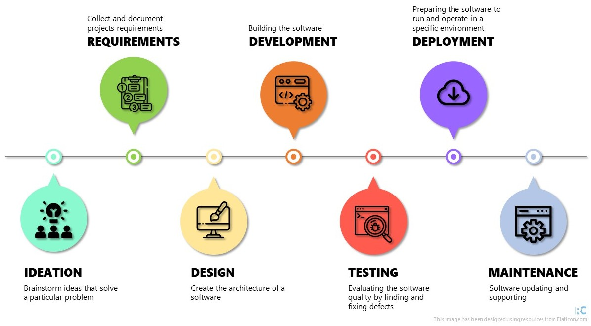

Software Development Life Cycle
Contents
Software Development Life Cycle¶
Most coding trainings/lessons just focus on developing coding writing skills. However, this is just a step in the software development process.
Software Development Life Cycle (SDLC) is a cycle composed of seven steps:
Ideation
Requirements
Design
Development
Testing
Deployment
Maintenance

Ideation¶
First it is necessary to define a problem to solve: What are we going to do?
Two techniques are useful in the Ideation step:
Brainstorming
Research
Brainstorming
Brainstorming helps to explore your project concepts, generate new ideas, and rejecting bad ones.
Research
To create relevant work it is necessary to know the context in which it will exist. Research helps to validate ideas from brainstorming sessions
Requirements¶
Define a project plan: How are we going to do it?
In this step it is necessary to gather software requirements from everyone involved in the project.
Warning
Each person involved in the project may have a different need, so it is necessary to check with each one what they need.
For example, in an academic environment, the PI usually has a more global view of the project, while other participants have a more specific view.
Some topics to help define requirements include:
final goal
project scope (how to reach the final goal)
what is feasible (and how)
what is priority
what resources are available
deadlines
potential risks
Software Requirement Specification¶
All information regarding the requirements must be organized in a file, the Software Requirement Specification.
Everyone involved in the project should review this document. If any requirement has a problem (is incomplete, unclear, ambiguous, etc.), it must be identified and corrected.
Tip
Depending on the characteristics of the project, it may be useful to generate some additional documents to help understand the requirements.
For example, if the project is related to data collection, a Data Flow Diagram can be help to track all variables, their connections and clarify requirements.
Design¶
Translate the Software Requirement Specification into Design: What is the software architecture?
When designing software, the object-oriented approach is a common programming paradigm.
Object-oriented components
Classes: A user-defined type
Object instances: A particular object instantiated from a class.
Methods: A function which is “built in” to a class
Constructor: A special method called when instantiating a new object
The design usually includes descriptions of the architecture overview (high- level design) and the design of its components (low-level design).
Tip
When design an object-oriented software you must follow some principles, like:
Abstraction
Encapsulation
Decomposition
Generalisation
The design can be described using a class diagram in the Unified Modelling Language (UML). See below an UML class diagram for a purchasing system software:

See also
This UML example and a complete UML class diagram tutorial is provided by Visual Paradigm here.
Development¶
Translate the design document into a software. Is this where the fun begins?
Take your time!
Development is usually the most time consuming step in a Software Development Life Cycle.
The development can be done using different methodologies:
Waterfall: linear approach.
Each step must be completed before start a new one.
Changes in the original plan requires a restart in the development step.
Agile: incremental approach.
Development divided in iterations (ongoing design).
May include development in parallel.
Continuous delivery.
Note
In the Agile methodology the Software Development Life Cycle steps presented here are not linear.
Testing¶
Ensure that the software meets the requirements. Is this software good?
In this step, errors and failures are identified by exposing the code to an environment similar to the end-user experience.
There are several types of testing, some examples include:
Unit testing: are all components working?
Integration testing: are all components working when fitted together?
Performance testing: how does the software perform against different workloads? It is fast? Stable?
Functional testing: is the software aligned with Software Requirement Specification?
Note
If any problems are identified, the code returns to the development stage. Once fixed, the testing step must be performed again.
Deployment¶
Make the software available. Can other people use my code?
Tip
You can use platforms like GitHub to release your software.
Warning
The functionality of the software is linked to several specifications related to the operating system and versions of packages and other software related to the project. Listing these specifications will help others to replicate the environment in which the software was developed.
Maintenance¶
Is it over?
The work doesn’t end with the software deployment. In order for the software to remain functional over time, it is necessary to provide some maintenance.
We can classify maintenance into a few categories:
Corrective: fix reported errors/failures.
Preventive: regular checks and fixes.
Perfective: optimize implemented features, adding new features.
Adaptive: keep the software updated according to changes external to the project (new programming language version, new regulation, etc.).